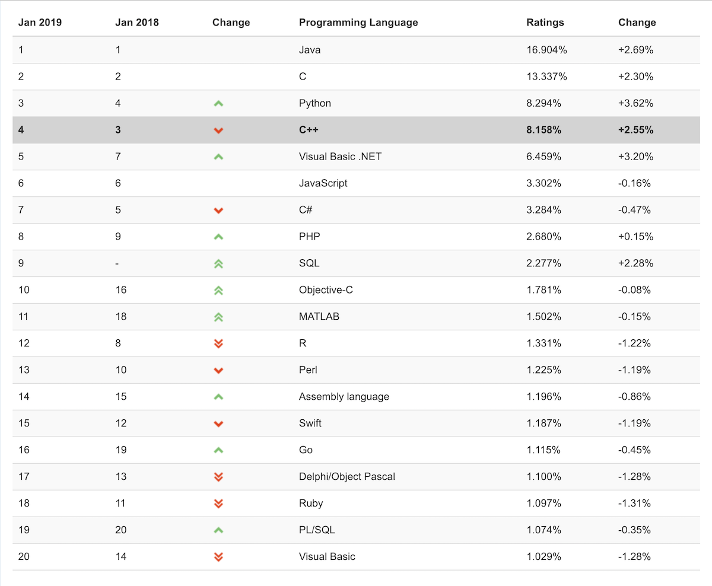
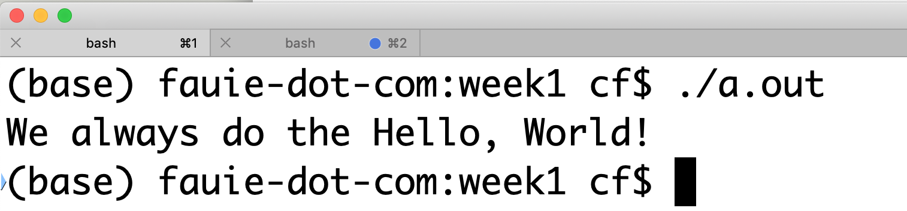
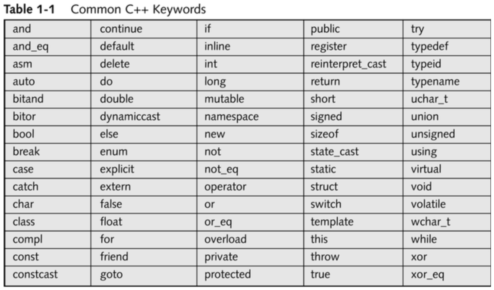

class: center, middle # INFO 450 Spring 2020 --- # Agenda 1. Introduction 2. Deep-dive 3. ... --- # <div style="text-align:center;font-size: 1.9em;line-height:1.8em;"> <strong>Why are you here?</strong><br/> <i>... besides the AWESOME reviews of my teaching style...</i> <br/> What do you want to learn? <br/> What would help you enjoy this class? <br/> What's your history with programming? </div> --- # Classroom norms * Use the restroom at your leisure * Bring food that doesn't have a strong odor or loud crunch * Be on time, but late is better than absence * Take copious notes. I talk a lot and not everything is in slides * ASK QUESTIONS - I move fast. Silence means understanding * Respect your classmates, respect the room, respect me * <strong>Cheating sucks</strong> don't do it. * Assignments turned in late will be accepted up to one week late for 50% maximum credit. ALL must be turned in by the final exam.* This is a hard class. Do not expect an `A` I am always willing to go above and beyond to help folks who care. Your attitude means everything. chfauerbach@vcu.edu --- # Programming <div style="text-align:center;font-size: 2em;line-height:1.8em;"> is the process of creating a set of instructions that tell a computer how to perform a task. Programming can be done using a variety of computer languages </div> --- # Why learn to program? All the reasons! + Programming help develop problem solving skills + Programming teaches you how to think in both structured and create way + Programming makes things easier + Programming teaches you persistence + Check out developer salary ranges + It’s cool... --- --- # Innovations in technology have shaped our everyday lives --- # Why are we learning C++? <div style="text-align:center;font-size: 2em;line-height:1.8em;"> <strong>Python</strong> is obviously the best language in the universe. C++ is a much lower level language, closer to how the machine works. </div> --- # Still popular!  --- # Anatomy of a C++ Program .left-column-half[ ```c++ // HelloWorld.cpp : /* Defines the entry point for the console application. */ \#include <iostream> using namespace std; int main() { cout << “Hello World” << endl; return 0; } ``` ] .right-column-half[ <-- This is my file name! <-- This is a comment! <br/> <br/> <br/> <br/> <br/> <br/> <br/> <-- Preprocessor, include <-- Namespace <-- main is where we start! <-- Code block! <-- cout is a way of talking to the world <-- The result of your program/function <-- End of code block. ] <a href="HelloWorld.cpp">HelloWorld.cpp</a> --- # Make it run ```bash $ g++ HelloWorld.cpp $ ./a.out > Hello World ``` --- # Store code * Version Control Software: https://www.atlassian.com/git/tutorials/what-is-version-control ``` Version control systems are a category of software tools that help a software team manage changes to source code over time. Version control software keeps track of every modification to the code in a special kind of database. If a mistake is made, developers can turn back the clock and compare earlier versions of the code to help fix the mistake while minimizing disruption to all team members. ``` * GitHub -- github.com * Create an account --- # Git in a nutshell Github.com is your master repository <a href="https://help.github.com/en/github">Github help</a> * Create a repository in the github.com site * Use VSCode or command line 'git' to clone the repository ```bash git clone git@github.com:chrisfauerbach/info450_spring_2020.git ``` * Make changes, add files, etc locally. * Add new files: ```bash git add newfile.cpp ``` * Commit new file ```bash git commit -m "I am committing a new file." ``` * Push remote: ```bash git push ``` --- # Comments <strong>Comments</strong> are statements that do not affect the compiling or running of a program Comments are simply explanatory remarks that the programmer includes in a program to clarify what is taking place These remarks are useful to later program users because they might help explain the intent of a particular statement or the purpose of the entire program C++ supports both line and block comments ```c++ // A line comment /* a block comment */ ``` --- # Preprocessors and Namespace A preprocessor is a tool that runs before the actual compilation starts. Preprocessor directives are commands for the preprocessor and always start with a pound sign \# <strong>\#include <iostream></strong> is a preprocessor directive that tells the preprocessor to include the iostream standard header file Header files are files that contain predefined values and routines The ` < >` tells the compiler to look in predefined header directories only (generally where the STL is kept). `""` tells to compiler to look in the local directory, and usually the predefined header directories as A namespace preprocessor directive tells the compiler that the subsequent code is making use of names in the specified namespace. In this case, `namespace std` refers to the C standard library --- # Main Every C++ program contains at least one function, and that function is called `main()` The body of every function in a C++ program is a sequence of statements contained in curly braces, also known as curly brackets ```c++ { } ``` All complete C++ statements end with a semicolon It is a standardized convention that function `main()` is declared with an int preceding it. `int` is the return value type of the function `main()`. The programmer can use the return value of `main()` to convey a success or error state to the parent application. Conventionally a `0` is returned for success and non-zero failure --- # cout The cout in the statement the writes "Hello World" to the console screen is a stream defined in the standard (std) namespace The insertion operator () is used to put the text "Hello World" into the stream. The endl is used to end the line (like a carriage return and/or new line) The compiler was able to compile Line that contains cout because we instructed the preprocessor to include the definition of std::cout in with ```c++ #include <iostream.h> ``` and identified the appropriate namespace ```c++ namespace std; ``` --- --- # Why namespaces? With namespace declaration: ```c++ namespace std; int main() { cout << "Hi mom!" << endl; } ``` Without namespace declaration: ```c++ int main() { std::cout << "Hi mom!" << endl; } ``` --- # Building your program 1. Preprocessor * Takes the source code and evaluates the preprocessor directives (e.g. #includes, #defines, etc) * Generates a preprocessed source files 2. Compiling * Takes the preprocessed source code and compiles to object code * Check for syntax and semantic rules (e.g. type checking) 3. Linking * Takes the object files and links them into an executable program --- # Running! I'm a mac guy, not a Windows person. <br/> This is what I do to run my sample program:<br/> ```shell ls -latr touch program.cpp g++ program.cpp chmod +x a.out ./a.out ```  --- # Your turn! Open your books. Chapter 2. Find the first two programs. ```c++ /* Program 1 Chris Fauerbach */ #include <iostream> using namespace std; // main() is where program execution begins // on a mac, this is compiled with `c++ program1.cpp` // then run with ./a.out int main() { cout << "This is my first C++ program.\n"; return 0; } ``` --- # Program 2 ```c++ // Program # 2 - Using a variable #include <iostream> using namespace std; int main() { int x; // this declares variable x // with type int x = 1023; cout << "This program prints the values of x: "; cout << x; // This displays 1023 cout << "\n"; //CHF Adding new line. return 0; } ``` --- # Working with Variables * A variable is used to store information and is referenced or used by a program. * All variables in C++ are composed of three parts: * Type * Name * Value * <i>Values can be undefined</i> --- # Working with variables: <i>Names</i> In C++, names can include letters, number and underscores, yet they can not begin with a number or an underscore. * Good * average * daily_average * Bad * _average * 1daily * Names are case sensitive * average != AVERAGE * No spaces or other special characters are allowed within a C++ variable name * Total Amount * Total! * Every programming language contains a few vocabulary words, or special 'keywords', that you need in order to use the language; these keywords can NOT be used in variable names. --- # Common C++ Keywords  --- # Working with variables - Types * C++ supports four simple types: boolean, character, integer & float * An Integer is a whole number, either positive or negative * An Integer value may be stored in an integer variable declared with the keyword <span style="color: blue">int</span>, <span style="color: blue">short int</span> or <span style="color: blue">long int</span> * A Floating-point number is a number that include decimal positions, such as 98.6, 1000.00002, and -3.85 * They may be stored in variables with type <span style="color: blue">float</span>, <span style="color: blue">double</span>, and <span style="color: blue">long double</span> * A <span style="color: blue">char</span> may hold any single symbol in the ASCII character set * Often it contains a letter of the alphabet, but it could include a space, digit, punctuation mark, arithmetic symbol, or other special symbol * A <span style="color: blue">boolean</span> variable is one that only supports values of true and false --- # Working with Variables - Sizes <img src="sizes.png" width="100%"/> The size of the given data type is dependent on the compiler and/or the computer architecture. C++ does guarantee that the basic types will have a minimum size. --- # Variable Declarations * A declaration associates a type and a name with a variable and allows the complier to interpret the statements correctly * To declare a variable, you list its name and its type * A variable declaration is a C++ statement, so it must end with a semicolon * If you write a function that contains variables of diverse types, each variable must be declared in a statement of its own * If you want to declare two or more variables of the same type, you may declare them in the same statement * A variable can also be initialized as part of the declaration statement * When a variable declaration is executed, memory is allocated for the variable. This memory must be initialized to contain some definite value before the variable should be used in an expression. --- # Variable Declarations ## Examples Declare * int i; * int x, y, z; <strong><span style="color: red">#CHF - but don't</span></strong> * double area; * char my_letter; * <span style="color: red">int i, double area;</span> # CHF - this is invalid Declare and Initialize * int i = 200; * int x = 10, y = 20, z = 30; # CHF - but don't do this * double area = 20.1; * char my_letter = 'A'; * <span style="color: red">char invalid_assignment = "B";</span> # CHF - Must be single ticks ' --- # The <span style="color: blue">const</span> qualifier * A variable that does not change value does not need to be declared as a variable. * Instead, it should be a constant: ```c++ const double MINIMUM_VALUE = 25.0; ``` declares a constant named MINIMUM_VALUE that can be used as a variable but cannot be changed during the program execution. --- # C++ binary arithmetic operators C++ provides five simple arithmetic operators for creating arithmetic expressions: * <span style="color: blue">\+</span> addition * <span style="color: blue">\-</span> subtraction * <span style="color: blue">\*</span> multiplication * <span style="color: blue">%</span> modulus Examples: ```c++ int a = 10; int b = 12; int c; int d; int e; c = a + b; d = c / 2; e = d % 5; cout << c << endl; # What's c? cout << d << endl; # What's d? cout << e << endl; # What's e? ``` --- # Putting it all together - Circle program ```c++ // Sample program that calculates the // circumference and area of a circle #include <iostream> using namespace std; int main() { const double PI = 3.14; int radius = 5; double area; double circumference; circumference = 2 * PI * radius; area = PI * (radius * radius); // pow(radius, 2) ? cout << "The circumference is: << circumference << endl; cout << "The area is: << area << endl; return 0; } ``` --- # HOMEWORK * Launch MS VS C++ and create new console program * Familiarize yourself with the IDE * Where is the solution explorer? * Open new project : Circle Program * Where are your source files located? * Build your program * Where is the executable? * Execute your program * Stay and write more code, or go home and write more code. * Create a public github repository * Name it: <i>initials</i>_info_450_spring_2020 * Make a top level directory called `chapter2` * Make one program for each example in the book. * program1.cpp, program2.cpp, program3.cpp, program4.cpp Program 4 ends with: ```c++ cout << "Liters: " << liters << "\n"; ``` --- --- --- --- --- --- --- --- --- --- ---